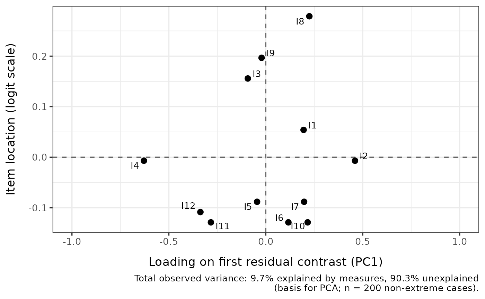

Fits a Rasch model (eRm::RM() for dichotomous data, eRm::PCM() for
polytomous data — chosen automatically), extracts standardized residuals
via eRm::itemfit()$st.res, and runs an unrotated principal-component
analysis on those residuals via stats::prcomp(). The function reports
the top n_components eigenvalues and their proportions of unexplained
variance, and optionally compares the first-contrast eigenvalue against
a simulation-based bound from RMpcaCutoff.
Arguments
- data
A data.frame or matrix of item responses. Items must be scored starting at 0 (non-negative integers). Rows with any
NAare dropped before PCA, sinceprcomp()does not accept missing values.- cutoff
Optional. The list returned by
RMpcaCutoff(itssuggested_cutoffis used), or a single numeric value to use as the cutoff directly. When provided, the result includes aFlaggedcolumn (logical: is the eigenvalue above the simulated bound?) and the kable caption notes the cutoff.- n_components
Integer. Number of eigenvalues to report. Capped at the number of items. Default
5.- output
Character.
"kable"(default) for a formattedknitr::kable()table,"dataframe"for the underlying data.frame, or"loadings"for a ggplot of PC1 loadings against item locations (similar in spirit to the loadings-by-location plot used ineasyRasch::RIloadLoc).
Value
If
output = "kable": aknitr_kableobject with columns Component, Eigenvalue, Proportion of variance (andFlaggedwhencutoffis provided). The caption gives the variance partition (% of total observed variance explained by measures vs. unexplained), the model fitted, sample size, and cutoff metadata if applicable.If
output = "dataframe": a data.frame with columnsComponent,Eigenvalue,Proportion_of_variance(andFlaggedwhencutoffis provided). The variance partition is attached as the"variance_partition"attribute — a list with elementstotal,explained,unexplained,pct_explained,pct_unexplained,n_persons. Access viaattr(result, "variance_partition").If
output = "loadings": a ggplot showing each item's PC1 loading on the x-axis and Rasch item location on the y-axis, with dashed reference lines at zero, and the variance partition in the figure caption. Item names are labelled viaggrepel::geom_text_repel()whenggrepelis installed; otherwise plaingeom_text().
Details
Rule-of-thumb thresholds for the first-contrast eigenvalue (e.g., the
"> 2" heuristic occasionally cited from Winsteps documentation) are not
reliable indicators of multidimensionality; the first-contrast eigenvalue
under a correctly fitting unidimensional model varies systematically with
sample size, test length, and item-parameter spread. Empirical (simulated)
bounds tailored to the data structure should be used instead — see
RMpcaCutoff, and Chou & Wang (2010) for the underlying
simulation argument.
The PCA is performed on the standardized residuals returned by
eRm::itemfit()$st.res, which are (observed - expected) / sqrt(var)
under the Rasch model. The reported eigenvalues are unrotated; rotation
is appropriate for interpreting a multidimensional solution but obscures
the dominant first contrast that dimensionality assessment is concerned
with.
Item locations on the loadings plot are computed as the per-item mean of
Andrich thresholds for polytomous data (PCM) or as -beta for dichotomous
data (RM).
The variance partition follows Linacre's CML/MLE convention: per-item
observed variance is compared to per-item expected variance under the
fitted model, summed across items. Expected scores are computed from
MLE person locations (via eRm::person.parameter()) and the CML item
parameters from eRm::RM() / eRm::PCM(). Persons with extreme raw
scores (no finite MLE theta) are excluded from the partition, matching
the sample used by eRm::SepRel() and the PCA itself.
References
Chou, Y.-T., & Wang, W.-C. (2010). Checking dimensionality in item response models with principal component analysis on standardized residuals. Educational and Psychological Measurement, 70(5), 717-731. doi:10.1177/0013164410379322
Examples
# \donttest{
set.seed(1)
dat <- as.data.frame(
matrix(sample(0:1, 200 * 12, replace = TRUE), nrow = 200, ncol = 12)
)
colnames(dat) <- paste0("I", 1:12)
# Default kable output
RMresidualPCA(dat)
#>
#>
#> Table: Rasch model (200 complete cases, 12 items). Total observed variance: 9.7% explained by measures, 90.3% unexplained
#> (basis for PCA; n = 200 non-extreme cases).
#>
#> |Component | Eigenvalue| Proportion of variance|
#> |:---------|----------:|----------------------:|
#> |PC1 | 1.464| 0.121|
#> |PC2 | 1.425| 0.118|
#> |PC3 | 1.281| 0.106|
#> |PC4 | 1.155| 0.096|
#> |PC5 | 1.125| 0.093|
# PC1 loadings vs item location plot
RMresidualPCA(dat, output = "loadings")

# }
if (FALSE) { # \dontrun{
# Simulation-based cutoff (slow): 250 Monte-Carlo iterations
bound <- RMpcaCutoff(dat, iterations = 250, parallel = FALSE, seed = 1)
RMresidualPCA(dat, cutoff = bound)
} # }